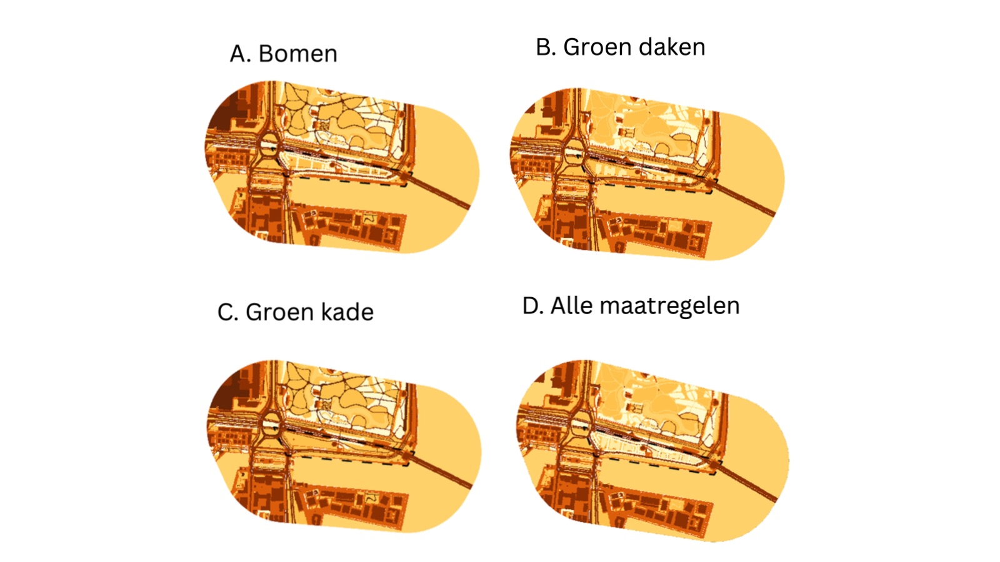
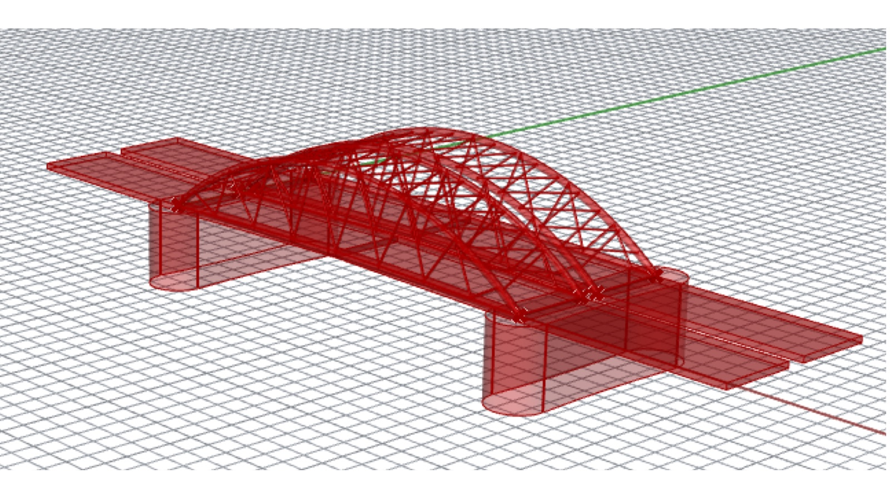

Hittestress-analyse Parkhaven
Kaarten en een hittestressanalyse in ArcGIS Pro voor het masterplan Parkhaven, waarin ik het effect van bomen, groene daken en een groene kade op de gevoelstemperatuur vergelijk.
Leerdoel 1.1
Competentie 1
Digitale onderzoeks- of ontwerpvraag formuleren
Voor project 1 (Parkhaven) moesten we onderzoeken welke klimaatadaptatiemaatregelen bij de gebouwen van het masterplan konden.
Ik moest een onderzoeksvraag formuleren en een passende methode kiezen.
Ik koos voor een hittestressanalyse in ArcGIS Pro. Hiervoor hadden we eerst de gebouwen nodig. Natasha en ik modelleerden ze in Forma, ik haalde het terrein weg in Revit en exporteerde het opnieuw als IFC. Daarna vergeleek ik de effecten van bomen, groene daken, een groene kade en alle maatregelen samen.
De omgeving wordt met alle maatregelen samen 2 graden koeler.
Ik heb geleerd dat je vraag bepaalt welke data en tool je nodig hebt.
Aangetoond in
Data verzamelen en interpreteren
Voor project 2 (digitale fabricage) moest ik met twee groepsgenoten onderzoeken hoe de kleiprinter werkt. Dat was uitdagend. De informatie was beperkt en je weet vooraf niet precies wat je moet weten. Dat leer je pas tijdens het proces, en dat kost veel tijd.
Ik moest informatie verzamelen zodat onze groep kon gaan printen.
Ik vroeg eerst aan AI wat belangrijk is om te weten voordat je gaat printen en welke websites handig zijn. Die informatie heb ik kritisch gecontroleerd door de video's van het bedrijf achter de WASP 2040 te bekijken en door testprints te maken.
Na kennisuitwisseling stelde een groepslid voor om Termite te gebruiken, een Grasshopper-plug-in waarmee je de printer kunt aansturen. Ik dook in de informatie over Termite, vond de template, keek een video en paste toe wat ik leerde. De eerste print ging niet goed door de instellingen. Jurien van de andere groep gaf mij hier feedback op. Ik keek de video opnieuw en de tweede print ging beter. Zo bestond het proces uit testen, bespreken wat er misging, oplossingen bedenken, toepassen en opnieuw testen.
In het begin hadden we geen idee hoe de printer werkte. Nu hebben we genoeg basiskennis om het aan een ander uit te kunnen leggen.
Ik heb geleerd dat je geduld nodig hebt en dat je door met anderen te overleggen meer ziet dan alleen. Zonder de kennisuitwisseling had ik Termite waarschijnlijk niet gevonden.
Aangetoond in
Digitale tools integreren en prototypen
Sinds 1 oktober loop ik leerplek bij ABT, in het Oosterhoff Digital team. Mijn doel was mijn digitale skills te ontwikkelen, vooral Grasshopper en Python voor constructief ontwerp. Ik begon bijna vanuit het niets.
Ik moest parametrische vakwerken ontwerpen en deze koppelen aan Karamba3D en Technosoft Raamwerken.
Ik keek eerst een video over Grasshopper, maar die legde bijna dezelfde dingen uit als Arjen over lists, items en trees. Ik snapte er nog niks van. Daarom volgde ik de cursus op ThinkParametric. Die vertelde ook dezelfde dingen, maar opeens kon ik wel begrijpen wat er bedoeld werd. Daarna maakte ik een vakwerk en koppelde dat aan Karamba3D. Vervolgens maakte ik meerdere vakwerken en koppelde die aan Revit.
Ik heb een vakwerk-script gebouwd met meerdere invoerparameters en diagonale patronen, gekoppeld aan Karamba3D en Technosoft Raamwerken. Mijn begeleider noemt dit een belangrijke stap vooruit en ziet dat ik de basis vrij snel onder de knie heb gekregen.
Waar ik nu sta met Grasshopper is een groot verschil met mijn beginpunt. Ik heb veel geleerd over de verschillende componenten. Mijn begeleider adviseert om het parametrisch denken meer in gedachten te houden. Ik moet dus niet alleen nadenken over wat werkt met de huidige parameters, maar ook over hoe het script zich gedraagt als parameters wijzigen. De geometrie moet als één geheel meebewegen, invoerwaarden moeten hergebruikt worden in plaats van gedupliceerd, en het script moet makkelijk uitbreidbaar zijn.
Dat wil ik verder ontwikkelen. Ik ga dat doen door bij elk nieuw script eerst te bepalen welke parameters ik wil kunnen wijzigen, het script te testen door die parameters aan te passen en bij uitbreidingen te kijken of ik het kan aanpassen zonder opnieuw te beginnen.
Aangetoond in
Reflecteren en valideren met stakeholders
Bij het project digitale fabricage twijfelden we in de groep tussen twee ontwerpen, dat van mij en dat van Renier. Beide waren gebogen en de printer kan niet schuin printen.
We moesten een ontwerp kiezen dat we daadwerkelijk konden printen.
We kozen voor het ontwerp van Renier. Mijn ontwerp was ingewikkelder om te printen en voor de cobot. Daarnaast merkte een groepslid op dat mijn parameters niet helemaal correct waren.
Toch hadden we nog steeds het probleem hoe we het gingen printen. Iemand kwam met het idee om de blokken hol te laten, zodat je de vorm van boven kunt printen. Daarna kwam iemand met het idee om pennen als verbinding te gebruiken. Ik vroeg hoe dat zou werken als de klei krimpt, want de blokken moeten precies in elkaar passen zodat ze niet vallen. Daarop kwam het idee om schuurpapier te gebruiken: passen de verbindingen niet, dan kunnen we ze zo passend maken.
Door elkaars ideeën kritisch te bekijken, kwamen we tot een oplossing die printbaar was.
Ik heb geleerd dat een ontwerp niet alleen mooi moet zijn, maar ook uitvoerbaar. Wat het groepslid zei over mijn parameters sluit aan bij het advies van mijn begeleider op mijn leerplek over parametrisch denken. Dat dezelfde feedback twee keer komt, laat zien dat ik hier echt mee moet oefenen.
Aangetoond in
Leerdoelen gebruikt: 1.1, 1.2, 1.3 en 1.4 (persoonlijk leerdoel PD1)
Mijn persoonlijke leerdoel was om zelfstandig een parametrisch model op te zetten in Rhino/Grasshopper voor een draagconstructie. Ik begon klein: ik had één keer met een template van Arjen gewerkt en alleen parameters aangepast. In de eerste weken lukte het me niet om de pergola af te maken, en bij de workshop over item, list en tree maakte ik alleen de boog van de brug. Daarna begon ik bij ABT, in het Oosterhoff Digital team.
Ik wilde zonder template een vakwerk bouwen dat meebeweegt met parameters en dat ik kan doorrekenen. Mijn vraag was of ik dat zelf kon, en mijn methode was: eerst de basis leren, dan zelf bouwen en daarna koppelen aan Karamba3D om varianten te vergelijken.
Een video en de workshop legden bijna dezelfde dingen uit en ik snapte het nog niet. Daarom volgde ik via mijn leerplek de ThinkParametric-cursus, om Grasshopper beter te begrijpen. Daar viel het ineens op zijn plek. Waarschijnlijk doordat ik het een aantal keer had gehoord, al weet ik dat niet zeker.
Daarna bouwde ik helemaal zelfstandig een Pratt-vakwerk. Ik koppelde het aan Karamba en voerde berekeningen uit. Ik maakte drie andere vakwerktypes, koppelde elk aan een Karamba-component en bouwde een keuzecomponent, zodat je de varianten één voor één kunt doorlopen. Daarna exporteerde ik een vakwerk als XML-bestand vanuit Grasshopper en importeerde ik het in Technosoft Raamwerken.
Ik heb een script met meerdere invoerparameters en diagonale patronen, gekoppeld aan Karamba3D en Technosoft Raamwerken. Door de varianten naast elkaar door te rekenen kan ik een ontwerpkeuze onderbouwen met data. Mijn begeleider noemt dit een belangrijke stap vooruit en zag dat ik de basis snel onder de knie heb gekregen.
In het begin kon ik alleen de parameters van een ander aanpassen en nu bouw ik zelf scripts. Mijn begeleider gaf ook een verbeterpunt: parametrisch denken. Ik moet niet alleen kijken wat werkt met de huidige parameters, maar ook hoe het script reageert als ze wijzigen. De geometrie moet als één geheel meebewegen, invoerwaarden moeten hergebruikt worden in plaats van gedupliceerd en het script moet makkelijk uitbreidbaar zijn. Dat herken ik: bij project 2 merkte een groepsgenoot al op dat mijn parameters niet helemaal correct waren. Dat ik dit van twee kanten hoor, laat zien dat ik hier echt mee moet oefenen. Daarom bepaal ik bij elk nieuw script eerst welke parameters ik wil kunnen wijzigen, test ik het door ze aan te passen en kijk ik bij uitbreidingen of dat kan zonder opnieuw te beginnen.
Het lastigst vond ik in het begin dat ik de componenten niet kende en niet wist wat ik kon gebruiken. Daardoor duurde het even voordat mijn script werkte, maar na een aantal scripts ging het sneller. Het leukst vind ik het moment waarop het script werkt en ik mijn doel bereik. Als vervolgstap ga ik op mijn leerplek een echte draagconstructie maken, zoals een gebouw of brug, met Karamba, Python en Technosoft.

Kaarten en een hittestressanalyse in ArcGIS Pro voor het masterplan Parkhaven, waarin ik het effect van bomen, groene daken en een groene kade op de gevoelstemperatuur vergelijk.
Leerdoel 1.1

Een parametrisch script met vier soorten vakwerken, doorgerekend met Karamba3D en geëxporteerd naar Technosoft Raamwerken, gemaakt op mijn leerplek bij ABT.
Leerdoel 1.3

Mijn eigen ontwerp voor een overspanning van kleiblokken, parametrisch gemaakt in Grasshopper voor project 2 (digitale fabricage).
Leerdoelen 1.3, 1.4

Uitzoeken hoe de kleiprinter werkt, de printbestanden voorbereiden met de Termite-template en de kleiblokken van het gekozen ontwerp printen, voor project 2 (digitale fabricage).
Leerdoelen 1.2, 1.4

Hetzelfde vakwerk als in mijn Grasshopper-script, opnieuw opgebouwd met alleen Python-code in de ingebouwde Python van Grasshopper.
Leerdoel 1.3

Een parametrisch model van de Van Brienenoordbrug in Grasshopper: in september lukte alleen de boog, in november bouwde ik zelfstandig de hele brug.
Leerdoel 1.3